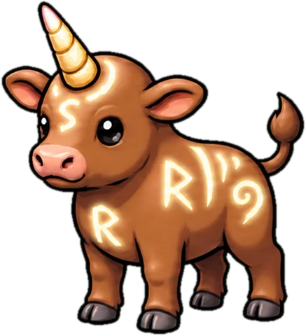

Tap a stage to read its story.
Hornling is a small, smooth-sided calf with a single pale horn and a coat covered in flowing white rune swirls - natural marks that appear at birth and deepen over time. Its body is warm amber-brown and its large eyes hold a focused intelligence unusual in something so young. The runes on its hide are ancient desert script; scholars have read them as fragments of the desert's own history, rewritten on each new Hornling. It grazes the Amber Desert's sparse dry grass with the seriousness of a creature that knows exactly how valuable each bite is.
Field note: The rune patterns on each Hornling are unique - no two have ever been found to share the same arrangement.
Amber Desert. Hornling and its family are found in the Amber Desert. See everyone who lives there.
Share a Bond Food that matches its types to become friends. Hornling loves:
A Bond Food is not a trick. It joins your spirit with the Kimuro's spirit, and only when it chooses you.
Print the Kimuro adventure packs: mazes, cards, a board game and Bond Mark medals.
See the printable packs